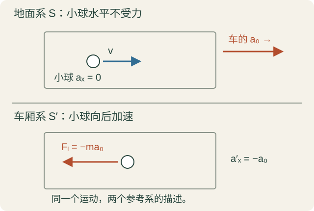
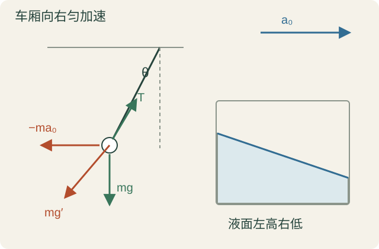
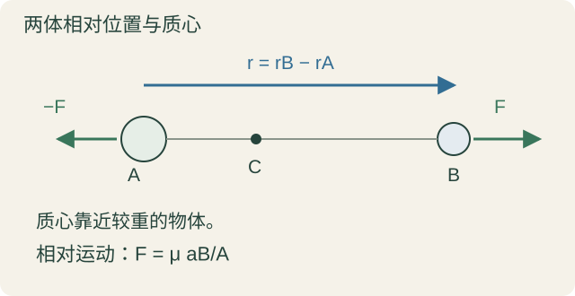
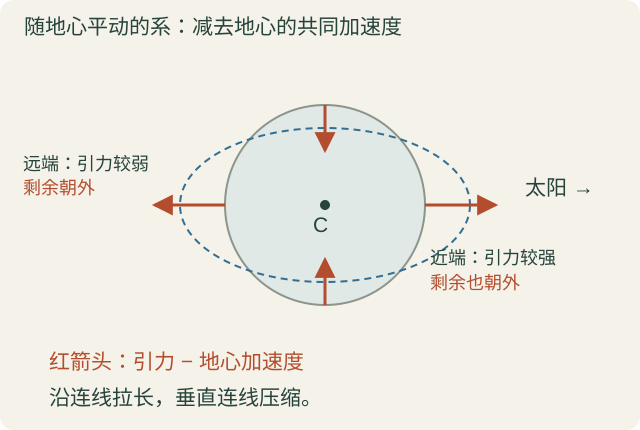
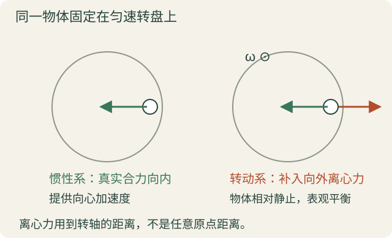
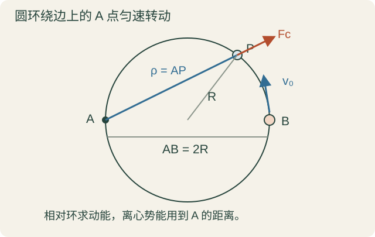
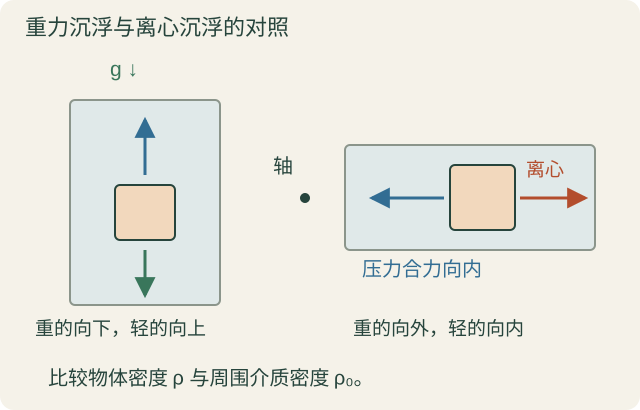
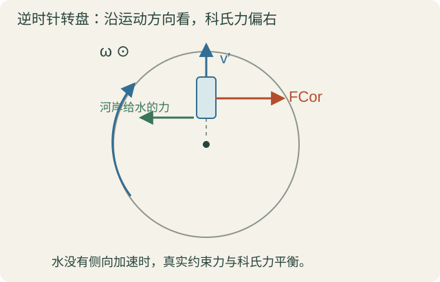
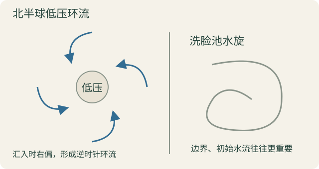
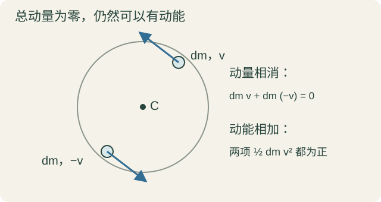

10 月 13 日 · 第二章 §2.3—§2.4 开头
在加速的参考系里分析运动
这一讲先解决一件事：参考系自己在加速时，怎样在这个参考系里分析物体。 从车厢里的摆开始，接到两体相对运动和潮汐，再看转动参考系中的离心力、科氏力，最后引出动量与冲量。
先约定：S 是背景惯性系；S′ 是我们选的非惯性系。带撇的速度、加速度，都是在 S′ 中测的。这里讨论牛顿力学，撇号只是参考系的标签。
1 车在加速，小球为什么会向后跑
想象车厢向右加速，里面有一个水平方向不受力的小球。地面看，小球保持原来的水平速度；车厢却越来越快。所以车里看，小球会向后加速。 你找不到另一个物体向后推它，却确实测到了向后的相对加速度。
把三个加速度认清：a 是地面测小球，a′ 是车厢测小球，a0 是地面测车厢。先只考虑车厢平动、不转动。

同一个小球在地面系与加速车厢系中的描述 · 点图可放大
相对位置是 r′=r−r0。对时间求两次导数，得到
v′=v−v0,a′=a−a0.
比如小球水平不受力，地面看 ax=0，车里看就是 ax′=−a0。车向右加速，小球相对车向左加速。
在惯性系里，真实合力满足 F真=ma。所以
ma′=ma−ma0=F真−ma0.
把多出的这一项命名为惯性力，就得到
Fi=−ma0,F真+Fi=ma′.
这就是“形式上恢复牛二”：用车厢里测到的加速度，就把真实力和惯性力一起列进去。 不是物体真的多受了某个物体的推力，而是加速的参考系使运动方程多了一项。
方向看的是车厢加速度，不是车厢速度。车向右加速，惯性力向左；车向右开但刹车，加速度向左，惯性力就向右。刹车时身体前倾，地面看是身体保持原来运动状态的趋势；车里则用向前的惯性力描述。脚底与车厢之间的摩擦力仍然是真实力。
真实力有施力物。拳头打黑板，黑板也对手施力，这是牛三的一对力。惯性力没有对应的施力物，也没有一项必须配对的牛三反作用力。不要为惯性力再找一个“反作用力”。
引入它有两个好处：符合车内观察者的直观；更重要的是，方程恢复成熟悉的形式，受力平衡、动能定理等工具又能用。只是在非惯性系里列动能定理时，要把惯性力的功也计入；机械能守恒还需要相应的保守性和不显含时间等条件，不能自动套。
平移惯性力对同一参考系是全局的：a0(t) 可以随时间变化，但同一时刻，每个质点对应的惯性加速度都是 −a0，与它在车内哪里、怎样运动无关。力的大小还要乘各自质量。
2 加速车厢里的“向下”：类重力、摆和液面
现在让车厢以恒定加速度 a0 向右运动，地面附近的 g 近似恒定。车里每个质点都受到重力和惯性力，它们可以先合并：
mg−ma0=m(g−a0).
因此定义
g′=g−a0.
它叫类重力加速度。车里很多问题，就像在一个方向改变了的重力场中做题。 真实重力向下，惯性力向左，因此类重力指向左下方。

车厢内的倾斜单摆、类重力方向与液面 · 点图可放大
先看悬挂小球。稳定后，小球相对车厢静止，所以 a′=0。绳子拉力 T 与类重力平衡：
T+mg′=0.
绳子就沿左下方倾斜。设它与竖直方向夹角为 θ，分别投影：
Tsinθ=ma0,Tcosθ=mg.
两式相除：
tanθ=ga0.
这里的“平衡”是相对车厢静止。地面看，小球仍然跟着车一起加速，不能把地面系的真实合力也写成零。
如果小球在这个倾斜位置附近小幅摆动，把它相对新平衡方向的偏角记为 ψ，切向运动方程是
mℓψ¨=−mg′sinψ≃−mg′ψ.
所以小振动角频率是 g′/ℓ，周期为
T摆=2πg′ℓ,g′=∣g′∣=g2+a02.
根号里用类重力的大小，不能直接用向量。 新的平衡方向改变了，回复作用的强弱也改变了。
再看车厢里的鱼缸。稳定液面要垂直于类重力方向，否则液面上还会有推动液体流动的分量。取向右为 x 正向、向上为 y 正向，类重力势能可以写成
U=mgy+ma0x.
液面上 U 相同，所以
gy+a0x=常量,dxdy=−ga0.
车向右加速，液面左高右低。 摆绳沿类重力，液面垂直于类重力，这两幅图是一回事。
把旧的重力问题移过来用，需要车厢不转动、a0 为恒矢量，并且考察范围内重力近似均匀。若车厢加速度随时间变化，瞬时仍有惯性力，但不能直接照搬上面的定常平衡和周期。
3 两个物体都在动：约化质量从哪里来
考虑只有彼此相互作用的两个质点 A、B，没有外力，或者外力可忽略。这叫孤立两体。太阳与行星、电子与质子的简化模型，都属于这种思路。
先把 F 定义为 A 对 B 的力，那么 B 对 A 的力就是 −F。在背景惯性系中：
mAaA=−F,mBaB=F.
你关心的常常是两者怎样靠近或远离，而不是它们整体在宇宙中往哪走。所以换到随 A 平动、不跟着 AB 连线转动的参考系，去看 B。

两体的相互作用、相对位置与质心 · 点图可放大
A 自己也受到力、有加速度，因此 A 系一般是非惯性系。B 相对 A 的加速度为
aB/A=aB−aA=mBF−(−mAF)=(mA1+mB1)F=mAmBmA+mBF.
把前面的系数除过去：
F=μaB/A,μ=mA+mBmAmB.
μ 叫两体约化质量。它不是把 B 的真实质量改了，而是把两者共同贡献的相对加速度，写成一个类似单质点牛二的方程。 如果仍然写 F=mBaB/A，就漏掉了 A 的运动。
从惯性力也能看出同样的结果：在 A 系中，B 的表观合力是
F−mBaA=F+mAmBF=mAmA+mBF.
它等于 mBaB/A，整理后就是刚才的约化质量方程。一条是直接相减加速度，一条是在 A 系补惯性力，讲的是同一件事。
检查两个极限：若 mA≫mB，μ≃mB，很重的 A 几乎不动，可以近似固定；若两者质量相同为 m，μ=m/2，同样的相互作用会让两边都加速，相对加速度比固定一边时大一倍。
这个方程也能给出相对运动的动能形式。令 r=rB−rA、v相=r˙，两边点乘相对位移 dr=v相dt：
F⋅dr=μdtdv相⋅v相dt=d(21μv相2).
因此孤立两体的内力做功和满足
W内=Δ(21μv相2).
这里的质量是 μ，速度是相对速度。后面遇到木板与滑块，这一套还会再出现。
4 两体化单体：整体运动与相对运动分开
两个物体各有三个坐标，一共六个自由度。约化质量方程只描述三维的相对位置，另外三个自由度去了哪里？去了整个系统的质心运动。
定义总质量 MT=mA+mB，质心位置为
rC=MTmArA+mBrB.
这是按质量加权的平均位置。质量越大，质心越靠近它。又因为两内力相消，
MTr¨C=mAaA+mBaB=0.
所以孤立两体的质心做匀速直线运动。相对运动则满足 μr¨=F。
如果已经求出了 rC 和 r，能不能找回两个物体各自的位置？可以。先用 rB=rA+r 代入质心定义：
MTrC=MTrA+mBr.
于是
rA=rC−MTmBr,rB=rC+MTmAr.
所以“两体化单体”不是丢掉另一个物体，而是把运动重新分成整体怎样走、两者怎样相对运动，解完后还能还原。
课堂还用氢原子说明约化质量的实际用途。若把质子完全固定，电子运动的质量参数用 me；考虑质子也有反冲，参数应换成
μ=me+mpmemp.
因为 mp≃1836me，所以
meμ=1+me/mp1≃1−mpme.
修正约为千分之零点五。玻尔模型中的能级尺度、里德堡常量与这个质量参数成正比，因此把 me 换成 μ，就能计入有限核质量修正。这段的重点是“固定重物只是近似”，不是要求用经典力学完整解释原子。
讲稿自检：固定一个物体与两个都释放，相遇时间怎样比较？
两物体初始静止、相距 ℓ，靠万有引力靠近。固定质量 M 的物体时，相对距离满足 r¨=−GM/r2；两者都自由时，满足 r¨=−G(M+m)/r2。同样初始距离，方程的时间尺度正比于前面常量的负二分之一次方，因此
T固定MT两者自由=M+mM<1.
两边都靠近，比只让一边靠近更快。这个自检来自讲稿 p.10，是对约化质量的应用。
5 地球两端为什么都会涨潮
潮汐的关键是引力场不均匀。近的一端受太阳或月球吸引得更强，远的一端更弱；地球整体也在被吸引，不能把它当作固定不动的支架。
先考虑太阳，在随地心平动、但不跟着地球自转的参考系里分析。它的原点跟着地心公转，因此不是惯性系。这个系中的每个等质量质元，要补上同一个平移惯性力。
地心的公转加速度恰好是太阳在地心处产生的引力加速度。于是某处剩下的表观加速度为
a潮(x)=g⊙(r0+x)−g⊙(r0).
r0 是太阳到地心的位置，x 是地心到质元的位置。不是只看太阳对那块海水的吸引，而是看它与地心受吸引程度的差。

太阳真实引力、统一的平移惯性力和剩余引潮方向 · 点图可放大
靠近太阳的一端，真实引力比地心处大，减去共同加速度后，仍朝太阳，也就是背离地心。远离太阳的一端，真实引力比地心处小，减去共同加速度后，剩余方向背向太阳，同样背离地心。垂直这条连线的两侧，则有向内挤压的趋势。
因此理想水球会沿地日连线拉长，两端都鼓起。地球自转，地面某处依次经过两个鼓起区域，于是有一天约两次涨落的基本图像。真实海岸的潮汐还受海盆形状等条件影响，这幅图是在解释引潮机制。
为什么引潮效应要看 M/r3，而不是普通引力的 M/r2？以近端为例，设源质量 Ms，地心到源距离 r0，地球半径 RE≪r0：
Δg=(r0−RE)2GMs−r02GMs.
提出 r02，把 u=RE/r0 当小量：
Δg=r02GMs[(1−u)−2−1]≃r02GMs[(1+2u)−1]=r032GMsRE.
不含 u 的零阶项消掉了，留下描述“场的不均匀”的一阶项。 这里比较的是同一个地球，RE 相同，因此太阳、月亮谁引潮更强，要比较各自的 Ms/r03。
课堂给了一个很直观的比较法：太阳和月亮在天空中看起来差不多大，日食正说明它们的视角大小接近。写成平均密度与半径：
r03Ms=34πρˉs(r0Rs)3.
既然 Rs/r0 接近，就主要比平均密度。月球平均密度约 3.34g/cm3，太阳约 1.4g/cm3，所以月球引潮贡献更强，量级却与太阳相近。吸引整个地球更强，和造成更强潮汐，不是同一个比较。
太阳、地球、月球近似共线时，两个拉长方向一致，初一、十五附近形成大潮；上、下弦附近两方向近似垂直，形成小潮。日期只是理想几何图像，具体地点的最大潮有滞后。
月球总以近似同一面朝向地球，也与潮汐有关。岩石并非绝对刚性，也会产生潮汐形变；反复形变伴随耗散，长期演化可使自转与公转同步，形成潮汐锁定。“只有一面朝地球”不等于“不自转”，而是自转一周和公转一周所需时间相同。
6 参考系转起来以后，多出的三项是什么
车厢只平动时，惯性加速度在各处一样。转盘就不同：离轴越远，要跟着转盘走，需要的向心加速度越大；物体若还相对转盘运动，又会多出新的项。
先考虑原点固定、只转动的 S′。ω 是转动系相对惯性系的角速度，β=ω˙ 是角加速度；r′、v′ 是质点在转动系中的位置和速度。科氏力里必须用 v′，不能拿地面测到的速度直接代。
为了看清三项从哪里来，回顾一个求导关系。一个向量 A，即使在转盘上分量没变，方向也可能跟着转盘转，所以
(dtdA)S=(dtdA)S′+ω×A.
把它用于位置，先得到速度关系：
v=v′+ω×r′.
再对时间求导。第一项在惯性系中的导数是 a′+ω×v′；第二项用乘积求导。因此
a=a′+ω×v′+β×r′+ω×(v′+ω×r′)=a′+2ω×v′+ω×(ω×r′)+β×r′.
两个 ω×v′ 来自两次求导中的不同部分，加起来才是 2。 把 a′ 以外的项移到右边，再乘 −m，就得到转动系中要补的惯性力：
| 名称 |
表达式 |
依赖什么 |
| 惯性离心力 |
Fc=−mω×(ω×r′) |
位置、角速度 |
| 科里奥利力（科氏力） |
FCor=−2mω×v′=2mv′×ω |
相对速度、角速度 |
| 横向惯性力（欧拉力） |
FE=−mβ×r′=mr′×β |
位置、角加速度 |
后面主要看匀速定轴转动：ω 大小方向都不变，β=0，只剩离心力和科氏力。如果原点还在加速平动，另加 −ma0；不要把上面“固定原点”的前提忘掉。
7 离心力朝哪里，为什么有负的离心势能
令转轴沿 z。把位置分成平行转轴和垂直转轴的部分，垂直部分记作 r⊥，它的长度 ρ 就是到转轴的距离。
利用向量三重积：
ω×(ω×r′)=ω(ω⋅r′)−ω2r′=−ω2r⊥.
所以
Fc=mω2r⊥.
方向离开转轴，大小 mω2ρ。不能一般地把 ρ 换成到原点的三维距离；只有物体就在垂直于轴的平面里，两者才相同。

同一匀速圆周运动在惯性系与转动系中的受力 · 点图可放大
一个物体固定在转盘上：地面看，它在转弯，真实合力向内提供向心加速度；转盘上看，它静止，真实向内的力与补入的离心力平衡。地面系不需要再加一项离心力；“向心力”也不是第三种额外的力，它是真实力的向内合力。
当 ω 恒定时，离心力是线性向外的力，可以引入离心势能。沿径向走 dρ：
dWc=mω2ρdρ=−dUc.
从轴上积分，取 Uc(0)=0：
Uc(ρ)=−21mω2ρ2.
为什么是负号？物体往外走时，离心力做正功，对应势能下降。 验一下，−dUc/dρ=+mω2ρ，正好向外。
科氏力则始终垂直于相对速度：
FCor⋅v′=2m(v′×ω)⋅v′=0.
因此它在转动系中不做功，但仍可能改变运动方向或改变轨道所需的支持力。不做功，不等于可以在受力分析里删掉它。
8 圆环绕边上一点转，小珠能不能走到转轴
水平光滑圆环半径为 R，绕圆环上的 A 点，以恒定角速度 ω 转动。小珠套在环上，从与 A 相对的 B 点出发，相对环的初速度为 v0，朝 A 运动。求它能够接近、到达 A 的临界初速。

圆环绕边上一点A转动，小珠从对径点B走向A · 点图可放大
选随圆环转动的参考系，环就不动了。 这比在地面追踪一条复杂轨迹方便。相对速度沿圆环切线；光滑环的支持力垂直于切线，所以支持力不做功。科氏力也不做功，只有离心力做功。
于是“相对动能＋离心势能”守恒：
21mv′2−21mω2ρ2=常量.
注意 ρ 是小珠到转轴 A的距离，不是到圆心的距离。圆环半径始终是 R，但 ρ 会变；在 B 点 ρ=2R，在 A 点 ρ=0。
从 B 点写到任意位置：
21mv′2−21mω2ρ2=21mv02−21mω2(2R)2.
因此
v′2=v02−4ω2R2+ω2ρ2.
越靠近 A，ρ 越小，速度越低，因为运动在抵抗向外的离心力。若初速太小，v′ 先变成零，出现折返点，随后返回。
临界时取 A 处 ρ=0、v′→0：
0=v02−4ω2R2,v0,临界=2ωR.
这是能量上的阈值。严格在理想模型中，等号轨迹渐近接近 A；若要求有限时间以非零速度通过 A，需要 v0>2ωR。这个细节不改变课堂求出的临界值。
这里还有个容易误判的地方：小珠相对环的轨迹是弯的，它有法向加速度。 所以不能说支持力与其他力的法向分量必须完全抵消。用能量能避开求支持力，但不是说支持力为零。
9 离心机为什么能分开不同密度的物质
先回忆重力场里的浮力。周围液体密度为 ρ0，取一个体积很小的区域 dV。若里面也装同样液体，它静止时，周围液体给它的压力合力必须平衡它的重力。因此浮力向上，大小为 ρ0gdV。
再把这小块换成密度 ρ 的其他物体，外部压强分布不变，浮力仍相同；重力却变成 ρgdV。于是比周围液体密的下沉，较轻的上浮。这就是“替换法”。
在随容器转动的系里，液体相对静止，却处在向外的离心力场中。它必须有一个越向外越大的压强分布，靠内外压力差平衡向外的离心作用。

重力场中的浮力与离心场中的向内浮力 · 点图可放大
取足够小的 dV，局部离心加速度近似为 ac=ω2ρre^r；这里用 ρr 表示离轴距离，避免和密度 ρ 混淆。
替换成周围介质本身，它的离心力是 ρ0acdV，所以周围压力给它的“浮力”一定是
dF浮=−ρ0acdV.
放回真实密度为 ρ 的物体，它自身的离心力是 ρacdV。合起来：
dF′=(ρ−ρ0)acdV.
所以比介质密的向外，比介质轻的向内。这和重力场中的沉浮是同一套判断，只是“向下”换成了“向外”。浮力来自介质的压强，是真实力；离心力是转动系里补入的惯性力。
离心机的好处是 ac=ω2ρr 可以通过转速和尺度调节，不像地面附近的 g 基本固定。课堂还举了同位素分离的应用，核心是利用微小质量差造成不同的分布趋势；这里掌握密度差、压强梯度和离心作用之间的关系即可。
10 科氏力为什么有一个 2，河岸又为什么会受力
科氏力是
FCor=2mv′×ω.
它依赖质点相对转动系的速度。相对转盘静止时，这项为零；沿转轴运动时，叉乘也为零。相对径向运动，科氏力沿角向；相对角向运动，科氏力沿径向。两者都存在时，分别叉乘再相加。
为了看清它的系数，取一个逆时针匀速转动的圆盘，让一小段水沿固定在盘上的径向河道，向外以恒定相对速率 v′ 运动。

逆时针转盘上的径向水流及科氏力方向 · 点图可放大
惯性系看，这个水质元的极坐标满足
r˙=v′,r¨=0,θ˙=ω,θ¨=0.
代入此前的极坐标加速度公式：
araθ=r¨−rθ˙2=−rω2,=rθ¨+2r˙θ˙=2ωv′.
所以真实合力必须有两个分量：
Fr=−mω2r,Fθ=2mωv′.
转到圆盘系，水沿直河道匀速走，a′=0。径向用向外的离心力平衡真实向心合力；角向就必须再补 −2mωv′e^θ，也就是 2mv′×ω。这个 2 与极坐标加速度中的 2r˙θ˙ 对应，不是为了凑公式随便添的。
再看河岸。逆时针转盘上，沿流动方向看，科氏力向右。若水被河道约束而没有偏转，河岸就得给水一个向左的真实约束力；水对河岸的反作用向右。河岸受到的冲刷来自真实接触力，不能把“科氏力”当成河水对河岸施加的牛三作用力。
把这套图像用到地球：北半球水平运动的科氏偏向在运动方向右侧，南半球在左侧。课堂据此解释河流两岸冲刷的不对称趋势。真实河道还受弯曲、地形等强烈影响，不能仅凭半球位置断言任意河段哪边一定冲刷更强。
11 大气为什么偏转，洗脸池水旋却不能这样判
如果运动没有被直河道限制，科氏力就表现为轨迹偏转。北半球向右偏，南半球向左偏；这里的“右”随运动方向一起变，不是地图上永远朝东。
在水平局部近似中，有效角速度分量是 ωsinφ，φ 为纬度，因此水平科氏加速度量级是 2ω∣sinφ∣v′。地球自转角速度约 7.27×10−5s−1，很小，往往需要较大尺度、较长时间，累积偏转才显著。

北半球低压周围的逆时针环流，以及小尺度水旋的区别 · 点图可放大
海陆升温、降温快慢不同，会改变大尺度气压分布和风向。夏冬季气流的基本驱动方向会改变，再叠加科氏偏向，就能理解季风方向随季节变化的图像。季节风也曾被用于远洋航行；这里是一个简化的机制说明，不是完整的大气环流模型。
若有局域低压，周围气流趋向低压中心，同时受到科氏偏转，就会形成绕转。北半球的低压气旋通常逆时针，南半球顺时针。课堂用热带气旋和风眼作例子：自转效应使气流不能简单地沿直线瞬间填平低压，但气旋形成和维持还需要其他条件。
洗脸池排水也有旋涡，能不能据此断言北半球一定向某个方向转？不能。 小尺度排水很容易受容器形状、初始水流、排水口等边界条件支配，顺时针和逆时针都可能出现。不能把大尺度气象中的科氏规律机械套到家用水池。
12 从瞬时受力，转到力在时间里的累积
惯性力讲完，回到惯性系，引入动量。对质量不变的质点，牛二可以写成
F=mdtdv=dtd(mv).
定义动量 p=mv、冲量微元 dI=Fdt，就有
dp=Fdt=dI.
在 t1 到 t2 这一段积分：
I=∫t1t2Fdt=p2−p1.
冲量和动量都是向量，增量始终是末态减初态。恒力时才可直接写 I=FΔt；变力要积分，或者使用定义明确的平均力。
数学上只是牛二的改写，物理上强调的角度却不同：牛二看这一瞬间怎样加速；动量定理看这个力持续一段时间后，累计改变了多少动量。
课堂用纸上放物体的例子说明：慢慢拖纸，摩擦作用时间长，可以把物体带走；突然快速抽纸，接触作用时间短，即使摩擦力量级并没有差很多，物体获得的冲量也可能很小。所以不能只盯着“力大不大”，还要看“持续多久”。
13 总动量是向量和，转着的圆盘也能总动量为零
对多个质点，定义系统总动量
P=i∑mivi.
质量连续分布时，对每一小块 dm 加起来：P=∫vdm。这是同一时刻对各处动量求和，和前面冲量对时间积分不是同一件事。

转盘对称位置的动量相消，但动能相加 · 点图可放大
均匀圆盘绕中心转动，在每块 dm 的对面，都能找到等质量、反向速度的质元。它们的动量 dmv+dm(−v)=0，所以整个圆盘总动量为零。
但动能是 21dmv2，两块都为正，相加不会消掉。总动量为零，不等于所有物体静止，也不等于动能为零。 质心没有移动，却仍然可以有内部转动。
下一讲从这个“把各质点动量加起来”的定义出发，证明系统总动量为什么只由合外力改变。
做题时先抓住什么
| 遇到的对象 |
先做哪一步 |
容易漏的条件 |
| 加速但不转动的车厢 |
列真实力，再补 −ma0 |
惯性力反向于加速度，不是速度 |
| 车里的静止摆、液面 |
合成 g′=g−a0 |
相对平衡不等于地面看无加速度 |
| 孤立两体的靠近、远离 |
写 μr¨=F |
相对加速度不能配单个真实质量 |
| 匀速定轴转动系 |
补离心力和科氏力 |
用到转轴距离、相对速度 |
| 转动系中求速率 |
先看哪些力做功 |
科氏力不做功，支持力还要看相对位移 |
| 一段时间里的受力 |
用冲量等于动量增量 |
向量、时间累积、末态减初态 |
本讲范围与核对来源
正文覆盖 10 月 13 日正式授课开头至结尾：惯性力引入、类重力、两体约化质量与质心、氢原子有限质量修正、潮汐与锁定、转动系三种惯性力、旋转圆环、离心机、河道和大气实例、动量冲量与转盘。没有把下一讲的功和动能提前当成这一天的新课。
核对材料：10 月 13 日录屏及录音转写；《第二章 牛顿定律 动量定理》p.9—14。正文以板书与物理关系校正转写中的“牵连/切点”“科氏/克释”等识别错误。图为按课堂装置重新绘制的示意图，不是录像截图。
转动系加速度的逐步求导、圆环临界时间细节和局部纬度投影，是为接通推导补充的说明；课堂的主要例子与点评均纳入。行政通知和课间闲聊不作知识内容。原始录屏、音频和讲稿保留在本地，不在此公开页面转载。